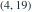
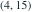
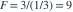

假定各组观测相互独立、服从正态分布且具有相同方差。单因素方差分析共有 5 个水平，每个水平独立观测 4 次；组间平方和为 12，组内平方和为 5。检验各水平均值相等的 F 统计量及原假设下自由度为哪项？
- A，自由度
- B，自由度

- C，自由度

- D，自由度
我已思考，展开答案与解析
正确答案：C
- 总样本量为 20。组间自由度为 ，组内自由度为 。
- 组间均方为 ，组内均方为 。
- 所以

，在独立、正态、同方差且各均值相等的条件下服从 。
易错提醒F 比较的是均方，而不是直接比较两个平方和。
南审 813 · 2025 · 二·3(2)，PDF第2页
从大题拆分考点并重新编写选项；数值或设问有调整。
查看参考来源